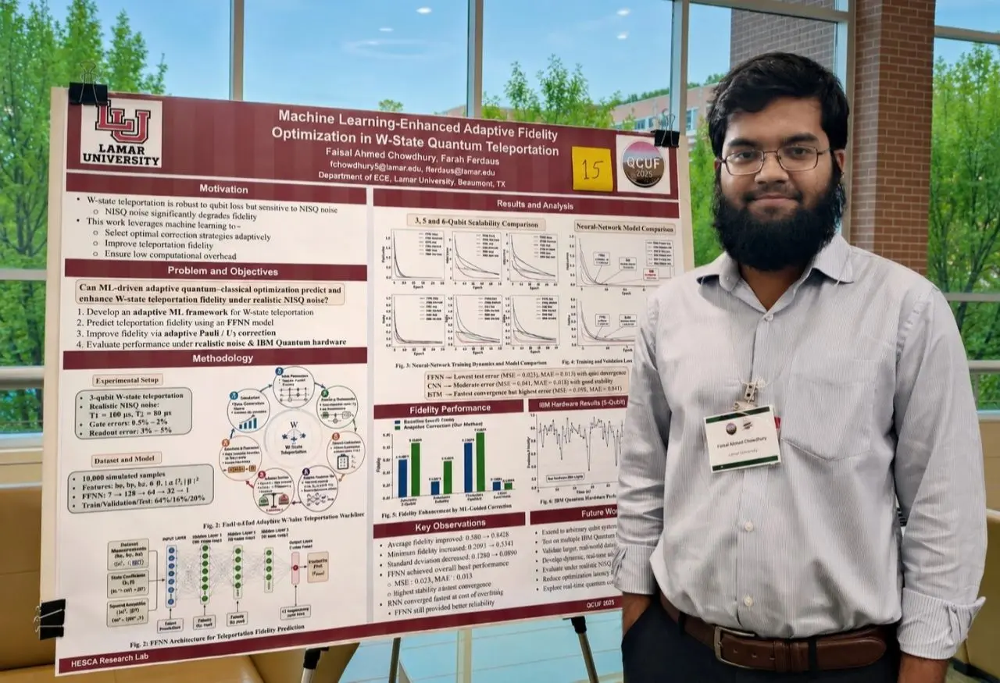
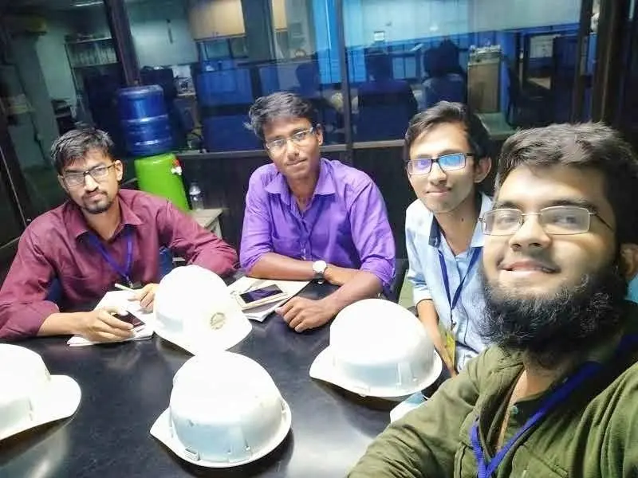

Quantum Error Correction
Surface-code and qLDPC decoding, mismatched inference, graph-based learning, decoder safety gates, and real-time correction strategies.

Faisal Ahmed ChowdhuryQuantum Computing Enthusiast, Lamar University
Fast, reliable decoders for fault-tolerant quantum computing. Scroll down: this page runs the same five steps a quantum computer uses to protect its data.
Step 01 · Encode Logical state
Distribute one logical state across several physical qubits so the information is not stored in a single fragile qubit.
I am a first-year Doctor of Engineering student in Electrical and Computer Engineering at Lamar University, focused on practical decoder architectures for reliable and fault-tolerant quantum computing.
My work develops decoder-centered methods for quantum error correction, combining realistic surface-code simulation, mismatch-aware inference, graph-residual learning, and confidence-based safety gates. I aim to translate strong logical-error performance into scalable, real-time decoding systems that make dependable correction decisions within quantum-control latency and hardware constraints. I am also interested in extending these ideas toward qLDPC codes while connecting QEC algorithms with computer architecture, secure systems, memory, and quantum communication.
Open to research collaborations and Ph.D. opportunities
Step 02 · Noise Physical errors
Physical qubits experience bit flips, phase flips, measurement faults, and other hardware noise.
Building a dependable path from noisy syndrome data to fast, explainable, and hardware-aware correction.
Surface-code and qLDPC decoding, mismatched inference, graph-based learning, decoder safety gates, and real-time correction strategies.
Teleportation protocols, noisy-channel fidelity, adaptive correction, and practical evaluation on quantum hardware.
Hybrid quantum-classical models, quantum image preprocessing, and ML methods for prediction and error mitigation.
Hardware-conscious inference, quantum-control interfaces, computer architecture, secure systems, and memory-aware decoder deployment.
Step 03 · Syndrome Stabilizer data
Ancilla measurements reveal an error pattern, the syndrome, without directly measuring the protected logical information.
A disagreement-gated graph-residual framework that selectively corrects mismatched MWPM decisions across surface codes.
Evaluated at code distances 3, 5, and 7, with improved logical-error performance and positive net correction under mismatch.
An adaptive machine-learning correction framework for improving teleportation fidelity under realistic quantum noise.
Benchmarking quantum image dataset preprocessing across QCNN, QuanvNet, and QViT architectures.
Accuracy, F1-score, throughput, and energy evaluated across MNIST, Fashion-MNIST, and MedMNIST.
Machine-learning and fuzzy-logic methods for rapid prediction and highly sensitive PCF-SPR biosensing.
IEEE Quantum Week 2026, Workshop Track
View PDF ↗IEEE Quantum Week 2026, Workshop Track
View PDF ↗Quantum Computing User Forum 2026, Oak Ridge National Laboratory
Preprint ↗IEEE COMPAS 2024
DOI ↗IEEE ICECE 2024
DOI ↗IEEE ICRPSET 2024
DOI ↗Under peer review in Advanced Sensor Research
Preprint ↗Step 04 · Decoder Infer correction
A decoder analyzes the syndrome and infers the most likely physical error and the safest correction.
Illustrative model: distance-5 rotated surface code, bit-flip errors only. My research targets realistic noise, mismatch, and far stronger decoders.
Select a qubit to begin.
Lamar University · Electrical and Computer Engineering
Researching quantum error correction and hybrid classical-quantum systems; supporting experiment design, simulation, and scholarly publication.
BSRM Steels Limited · Chittagong, Bangladesh
Tested, installed, calibrated, and maintained industrial electrical equipment; analyzed PLC automation faults and supported system reliability.
Electrical Engineering
Lamar University Department of Electrical and Computer Engineering · Texas, USAElectrical and Electronic Engineering
Chittagong University of Engineering and Technology Chittagong, BangladeshStep 05 · Correct Protected logic
Apply a physical correction or update the Pauli frame to recover the protected logical state.
Selected moments from research presentations, recognition, and hands-on engineering work.






I am interested in research collaborations and doctoral opportunities in quantum error correction, fault-tolerant quantum computing, and related quantum technologies.